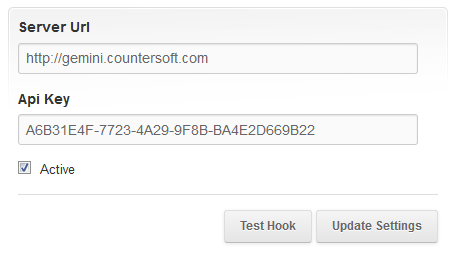
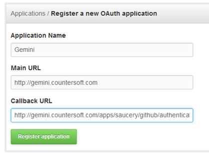
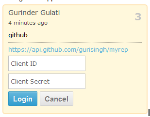
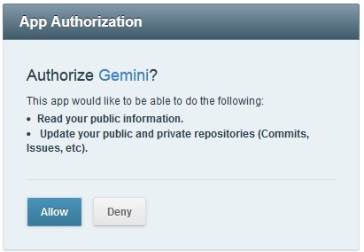
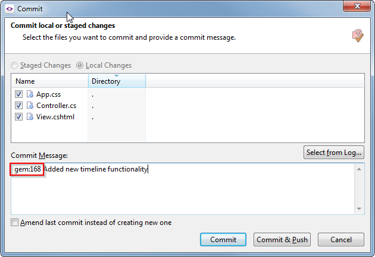
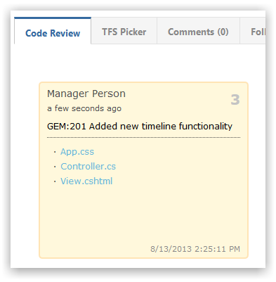

Open your Github repository and navigate to Settings.
Click 'Service Hooks', search for 'Gemini' and complete the details.

Within GitHub.com, navigate to 'Account settings' -> 'Applications' -> 'Register new application'. Complete the new application form.

Ensure you specify the callback URL like below.
http://YOUR GEMINI URL/apps/saucery/github/authenticate
Once the application is registered you can click on it and you will find the Client ID/Client Secret (make a note of these as you will require them the first time you access commited files from within the Code Review section).

You will be prompted to allow Gemini access to your GitHub account.

When commiting files into GitHub simply provide a Gemini item number like so.

Notethe 'GEM:' prefix is mandatory and you can specify multiple Gemini items by comma-separating them as part of the commit comment message.
All commited files and comments appear under Code Review as follows.
